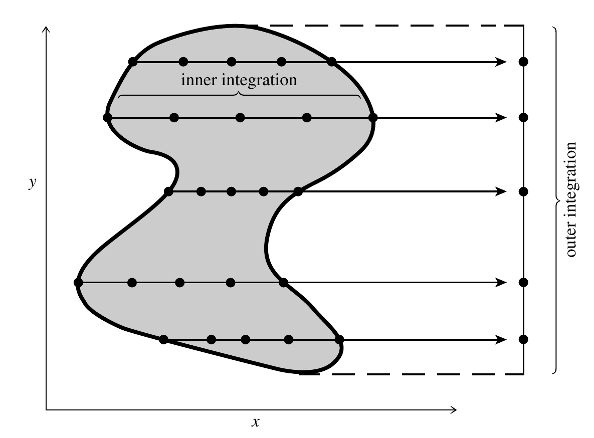
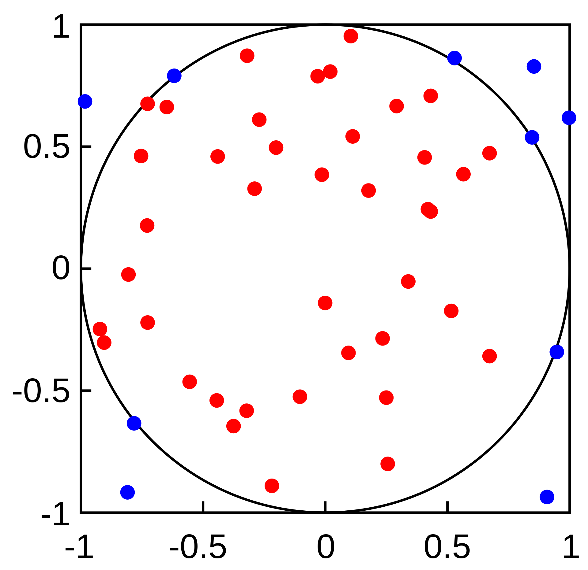

Gauss Quadrature
Gauss Quadrature
Note that Gauss-Legendre quadrature formula works on the interval $[-1, 1]$. For an arbitrary interval $[a, b]$, you will need to map $x$ to $[-1, 1]$:
$$ x = \frac{1}{2}(b - a)x' + \frac{1}{2}(b + a) $$So that:
$$ \int_a^b f(x)\,dx = \frac{1}{2}(b - a)\int_{-1}^1 f(x)\,dx' \approx \frac{1}{2}(b - a)\sum_{i=0}^{n-1}w_i f\left(\frac{1}{2}(b-a)x'_i + \frac{1}{2}(b+a)\right) $$Error estimates on Gauss Quadrature
For $n$-point Gauss-Legendre quadrature, the error is:
$$ \varepsilon_n = \frac{2^{2n+1}(n!)^4}{(2n+1)[(2n)!]^3}f^{(2n)}(\xi),\quad \xi\in[-1, 1] $$This error is very difficult to use in practice, since it's often not feasible to compute $f^{(2n)}(x)$, and $\xi$ is unknown.
Error estimates on Gauss Quadrature
A more practical way to estimate the error on Gauss Quadrature is to compare the $n$-point result with the $(n+1)$-point result.
However, usually the $n$-point abscissas $\{x_i\}$ are completely different from the $(n+1)$-point ones. We can't reuse the calculation results.
This is significant, because you may be better off computing the $(2n+1)$-point Gauss Quadrature, which is much more accurate.
Error estimates on Gauss Quadrature
Konrod (1965) found an extension of the Gauss quadrature so that $(2n + 1)$-point quadrature can reuse the same points from $n$-point quadrature.
For example, a 7-point Gauss quadrature can be combined with a 15-point Konrod extension to yield error estimate:
$$ \varepsilon = |G7 - K15| $$You can find the abscissa and weights at the Wikipedia page. This is implemented in many popular numerical libraries.
Gauss Quadrature
A more general form of the Gauss quadrature looks like this:
$$ \int_a^b W(x)f(x)\,dx \approx \sum_{i=0}^{n-1}w_i f(x_i) $$where $W(x)$ is an extra weight function. The Gauss-Legendre quadrature is the special case $W(x) = 1$.
Gauss Quadrature
For example, the Gauss-Chebyshev quadrature is when $W(x) = 1/\sqrt{1 - x^2}$:
$$ \int_{-1}^1 \frac{f(x)}{\sqrt{1 - x^2}}\,dx \approx \sum_{i=0}^{n-1}w_i f(x_i) $$The abscissas are roots of Chebyshev polynomials $T_n(x)$. The roots and weights are given by:
$$ x_i = \cos\left(\frac{2i + 1}{2n}\pi\right),\quad w_i = \frac{\pi}{n} $$We will make use of Chebyshev polynomials later in the course when we discuss spectral methods. They are superior to the Fourier series when approximating a non-periodic function on a finite interval.
Gauss Quadrature
Another example is the Gauss-Laguerre quadrature, when $W(x) = e^{-x}$:
$$ \int_{0}^\infty e^{-x}f(x)\,dx \approx \sum_{i=0}^{n-1}w_i f(x_i) $$The abscissas $\{x_i\}$ are given by the roots of the Laguerre polynomial $L_n(x)$, and weights are given by:
$$ w_i = \frac{x_i}{(n+1)^2[L_{n+1}(x_i)]^2} $$Laguerre polynomials occur in Quantum Mechanics. When solving the Schrödinger equation for a hydrogen-like atom, the radial wave function is expanded in $L_n$, whereas the angular part is expanded in $Y_{\ell m}$.
Gauss Quadrature
Another example is the Gauss-Hermite quadrature, when $W(x) = e^{-x^2}$:
$$ \int_{-\infty}^\infty e^{-x^2}f(x)\,dx \approx \sum_{i=0}^{n-1}w_i f(x_i) $$The abscissas $\{x_i\}$ are given by the roots of the Hermite polynomial $H_n(x)$, and weights are given by:
$$ w_i = \frac{2^{n-1}n!\sqrt{\pi}}{n^2[H_{n-1}(x_i)]^2} $$Hermite polynomials arise in Quantum Mechanics too. They are solutions to the Schrödinger equation for a harmonic oscillator.
Gauss Quadrature
All of these known quadrature rules are implemented in well-known numerical libraries, such as GSL, numpy/scipy, Julia. Their values are also well-documented online, so it's relatively easy to implement them on your own.
Improper Integrals
Several possibilities:
- A singularity exists at either or both ends of the integration interval
- One or both of the integration limits concern $\pm\infty$
- There exists an integrable infinity somewhere within the interval, e.g.: $$ \int_{-1}^1\frac{dx}{x^{2/3}} = 6 $$
Improper Integrals
The most common trick is to use change of variables to eliminate the infinity. For example:
$$ \int_a^bf(x)\,dx = \int_{1/b}^{1/a}\frac{1}{t^2}f\left(\frac{1}{t}\right)\,dt, \quad ab > 0 $$This can work when $a>0$ and $b\to\infty$, or $a\to-\infty$ and $b<0$. If the interval goes through 0, break it apart first.
Improper Integrals
If the integrand goes to infinity at end points as $1/\sqrt{x}$, we can do the following change of variable if singularity happens at $a$:
$$ \int_a^b f(x)\,dx = \int_0^\sqrt{b-a}2tf(a + t^2)\,dt, $$If singularity is at $b$, then:
$$ \int_a^b f(x)\,dx = \int_0^\sqrt{b-a}2tf(b - t^2)\,dt, $$Improper Integrals
In general, if the integrand diverges as $(x - a)^{-\gamma}$ with $0\leq\gamma < 1$:
$$ \int_a^bf(x)\,dx = \frac{1}{1-\gamma}\int_0^{(b-a)^{1-\gamma}}t^{\frac{\gamma}{1-\gamma}}f(t^{\frac{1}{1-\gamma}} + a)\,dt $$If the singularity as at the upper limit $b$, then:
$$ \int_a^bf(x)\,dx = \frac{1}{1-\gamma}\int_0^{(b-a)^{1-\gamma}}t^{\frac{\gamma}{1-\gamma}}f(b - t^{\frac{1}{1-\gamma}})\,dt $$Monte Carlo Integration
Monte Carlo integration is a method to estimate the value of an integral by using random numbers.

Monte Carlo Integration
Monte Carlo integration converges very slowly. The relative error scales as:
$$ \varepsilon \propto \frac{1}{\sqrt{N}} $$To achieve $10^{-4}$ accuracy, you need on average $N\sim 10^8$ points!
Multi-Dimensional Integrals
How to carry out multi-dimensional integrals?
$$ I = \int_{a_1}^{b_1}\int_{a_2}^{b_2} f(x, y)\,dx\,dy $$If the integration region is a rectangle, we can use Gauss-Legendre quadrature on both directions.
$$ I \approx \sum_{i=0}^{n-1}\sum_{j=0}^{m-1}w_i w_j f(x_i, y_j) $$Multi-Dimensional Integrals
How about when the integration region is irregular?
$$ I = \int_{x_1}^{x_2}\,dx\,\int_{y_1(x)}^{y_2(x)}\,dy\,f(x, y) $$We can still use repeated 1D integral. Define:
$$ g(x) = \int_{y_1(x)}^{y_2(x)}\,dy\,f(x, y) $$Multi-Dimensional Integrals
Multi-Dimensional Integrals
If each 1D integral takes $N$ function evaluations, now we need a total of $N^2$ evaluations.
For a 3D integral, we need $N^3$ evaluations. Curse of dimensionality!
For high dimensional integrals, suddenly Monte Carlo integration becomes quite attractive.
Multi-Dimensional Integrals
For example, we can use Monte Carlo integration to compute the volume of a sphere of radius $R$:
$$ V = \int_{-R}^R\,dx\,\int_{-\sqrt{R^2 - x^2}}^{\sqrt{R^2 - x^2}}\,dy\,\int_{-\sqrt{R^2 - x^2 - y^2}}^{\sqrt{R^2 - x^2 - y^2}}\,dz $$Multi-Dimensional Integrals
Multi-Dimensional Integrals
For regular integration regions and relatively low dimension (2D or 3D), use repeated 1D integrals.
For more complex integration regions or high dimension, use Monte Carlo.
We will come back to (pseudo)random numbers and Monte Carlo methods later in the semester.